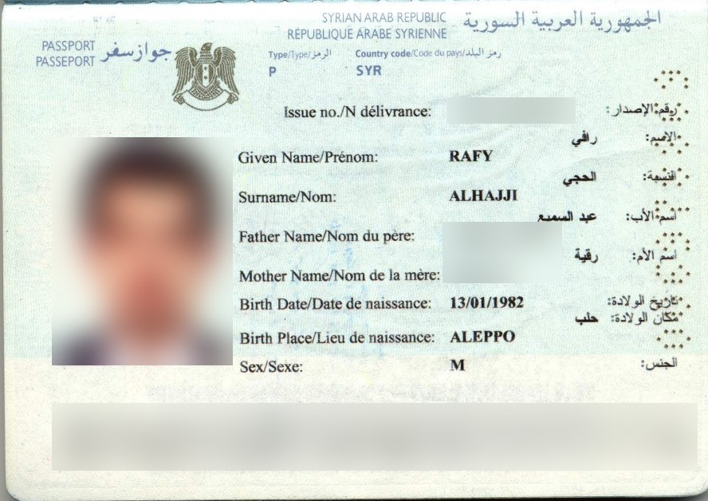
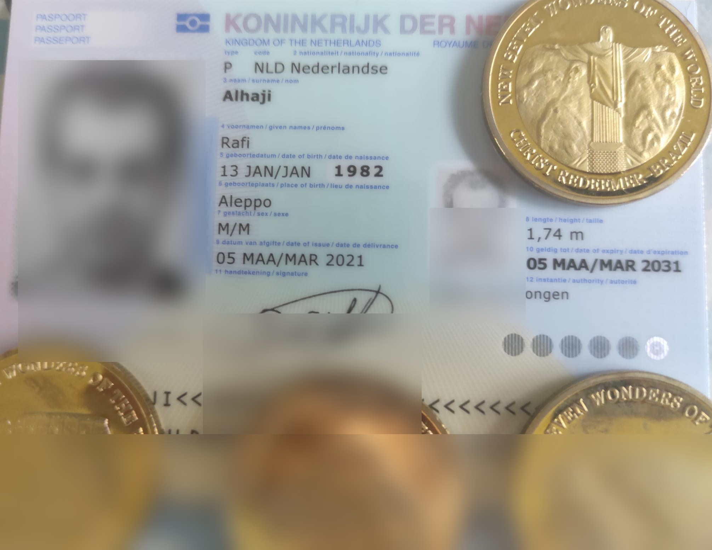

صيغ الاسم
جواز السفر السوري — بالأحرف اللاتينية: Rafy Alhajji
جواز السفر الهولندي — بالأحرف اللاتينية: Rafi Alhaji
الاسم الرسمي بالأحرف العربية: رافي الحجي
صيغة عائلية مستخدمة لدى قسم كبير من العائلة: رافي الحاجي
اختبار قابل للتدقيق للتقاطعات بين صيغ الاسم، التواريخ، الحسابات العددية، والتقاليد الدينية. لا يبدأ البحث من افتراض هوية نبوئية ولا يعتبر التشابه العددي إثباتًا لها.
هل تظهر بين البيانات الثابتة وأنظمة عددية مستقلة ونصوص أقدم من الحساب تقاطعات تتجاوز ما نتوقعه من المصادفة؟ وما الذي يبقى منها بعد اختبار التفسيرات البديلة والدليل المعاكس؟
جواز السفر السوري — بالأحرف اللاتينية: Rafy Alhajji
جواز السفر الهولندي — بالأحرف اللاتينية: Rafi Alhaji
الاسم الرسمي بالأحرف العربية: رافي الحجي
صيغة عائلية مستخدمة لدى قسم كبير من العائلة: رافي الحاجي
التاريخ الحقيقي المدخل في البحث: 6 يناير 1982 صباحًا، حلب.
التاريخ الرسمي: 13 يناير 1982.
الفارق الحسابي: 7 أيام.

تظهر النسخة المنقحة تهجئة RAFY ALHAJJI وتاريخ الميلاد الرسمي 13/01/1982. أُخفيت الصورة الشخصية ورقم الوثيقة وبيانات الوالدين ومنطقة القراءة الآلية.

تظهر النسخة المنقحة تهجئة Rafi Alhaji وتاريخ الميلاد الرسمي 13 يناير 1982. أُخفيت الصورة الشخصية والتوقيع ومنطقة القراءة الآلية وغيرها من البيانات غير اللازمة للتحقق.
A1Z26: 50 | 51 → 101
Pythagorean: 23 | 24 → 47
Chaldean: 12 | 13 → 25
مصادفة عددية الكنية تساوي الاسم +1 في الجداول الثلاثة؛ مع التنبيه أن A1Z26 والفيثاغوري غير مستقلين رياضيًا بالكامل.
Chaldean: 12 | 12 → 24
مصادفة عددية تناظر كامل في الجدول الكلداني.
رافي = 291
الحجي = 52
291 + 52 = 343 = 7³
خاصية رياضية 343 مكعب كامل للعدد 7.
291 + 53 = 344 = 343 + 1
مفسَّرة لغويًا الانتقال 343→344 ناتج مباشرة من إضافة الألف وقيمتها الأبجدية 1.
عيد الظهور الإلهي في التقليد المسيحي الغربي: ظهور المسيح للشعوب ممثلة بالمجوس. في تقويم مخصص لسوريا يوافق 11 ربيع الأول 1402.
يوافق 12 ربيع الأول 1402 في التقويم السوري الرقمي المستخدم، ويصنَّف فيه المولد النبوي.
التاريخ الرسمي؛ يوافق 18 ربيع الأول 1402 في المصدر السوري نفسه.
سنن أبي داود 4285 تذكر في الرواية أن المهدي «يملك سبع سنين». النص يذكر 7، ولا يذكر 343 أو 7³ ولا قيمة اسم.
رؤيا 4–5 تجمع الأربعة والعشرين شيخًا مع الحمل، وتصف الحمل بسبعة قرون وسبع عيون. هذا تقاطع نصي سابق للحساب.
القرآن يذكر اثني عشر نقيبًا لبني إسرائيل، كما يذكر الأسباط الاثني عشر. حضور 12 ثابت نصيًا، لكن النص لا يربطه بحساب اسم.
وجود 12/12 في الحساب الكلداني يتقاطع شكليًا مع 24. تفسير 24 شيخًا بوصفهم 12 سبطًا + 12 رسولًا تفسير مسيحي معروف، لكنه ليس معادلة يصرح بها نص الرؤيا.
6 يناير = Epiphany؛ 7 و12 و24 موجودة في النصوص المشار إليها؛ 343 = 7³ حسابيًا.
أن اجتماع هذه العناصر يحمل معنى يتجاوز المصادفة.
12/13، 23/24، 50/51، 12/12→24، وتكرار 101 في شفرات مختلفة.
لا يوجد نص معتبر عُثر عليه يقول إن 343 رقم المهدي أو المسيح، أو أن اسم الشخصية الموعودة يجب أن يساوي هذه القيم. كثرة أنظمة الحساب تزيد احتمال العثور على مصادفات.
اختبار ندرة إحصائي مسبق القواعد: تثبيت الصيغ والأنظمة قبل المحاكاة، مقارنة النتائج بأسماء ذات أطوال وبنية مشابهة، ثم نشر نسبة حدوث أنماط الفرق 1 و7³ و12/12. وبالتوازي يستمر البحث الأرشيفي عن صحيفة سورية معاصرة تثبت تاريخ ربيع الأول 1402.
سنن أبي داود 4285 — رواية السبع سنوات
سفر الرؤيا 4–5 — 24 شيخًا و7 قرون/عيون
An auditable test of intersections between name spellings, dates, numerical systems and older religious texts. Similarity is not treated as proof of prophetic identity.
Do fixed data, independent numerical systems and texts older than the calculation produce intersections beyond chance—and which survive alternative explanations and counter-evidence?
Syrian passport — Latin-script spelling: Rafy Alhajji
Dutch passport — Latin-script spelling: Rafi Alhaji
Official Arabic-script spelling: رافي الحجي
Arabic-script family variant used by a large section of the family: رافي الحاجي
Reported actual date: 6 January 1982, morning, Aleppo. Official date: 13 January 1982. Difference: 7 days.
The redacted copy documents RAFY ALHAJJI and the official birth date 13/01/1982. Unnecessary sensitive fields are obscured.
The redacted copy documents Rafi Alhaji and the official birth date 13 January 1982. Unnecessary sensitive fields are obscured.
Rafy Alhajji
A1Z26 50|51 → 101
Pythagorean 23|24 → 47
Chaldean 12|13 → 25
Rafi Alhaji
Chaldean 12|12 → 24
رافي الحجي
291 + 52 = 343 = 7³
رافي الحاجي
291 + 53 = 344
6 January is the Christian Epiphany. A Syria-specific calculated Hijri calendar maps 6 January 1982 to 11 Rabi al-Awwal 1402, 7 January to 12 Rabi al-Awwal, and 13 January to 18 Rabi al-Awwal. No contemporary Syrian newspaper scan has yet been found to prove the locally proclaimed lunar date.
Abu Dawud 4285 mentions seven years in a Mahdi report. Revelation 4–5 places the twenty-four elders with the Lamb and describes seven horns and seven eyes. Qur'an 5:12 and 7:160 contain twelve leaders/tribal divisions. None of these texts states that 343 or these name values identify a promised individual.
DOCUMENTED textual/calendar facts. HYPOTHESIS proposed meaning. COINCIDENCE numerical pattern needing statistics. COUNTER-EVIDENCE missing or conflicting expectations.
Pre-register the spellings and ciphers, simulate comparable names, measure how often +1 pairs, 7³ and 12/12 occur, and continue the archival search for a contemporary Syrian newspaper.
Abu Dawud 4285 · Revelation 4–5 · Qur'an 5:12 · Vatican: Epiphany · Syria Hijri calendar
Een controleerbare test van verbanden tussen naamspellingen, data, numerieke systemen en oudere religieuze teksten. Een numerieke overeenkomst geldt niet als bewijs van een profetische identiteit.
Blijven opvallende patronen bestaan nadat toeval, alternatieve verklaringen en tegenbewijs expliciet zijn meegenomen?
Syrisch paspoort — Latijns schrift: Rafy Alhajji · Nederlands paspoort — Latijns schrift: Rafi Alhaji · officiële spelling in Arabisch schrift: رافي الحجي · Arabische familievariant die door een groot deel van de familie wordt gebruikt: رافي الحاجي. Werkelijk opgegeven geboortedatum: 6 januari 1982, ochtend, Aleppo; officiële datum: 13 januari 1982; verschil: 7 dagen.
Rafy Alhajji
A1Z26 50|51
Pythagorean 23|24
Chaldean 12|13
Rafi Alhaji
Chaldean 12|12 → 24
رافي الحجي
343 = 7³
Deze patronen worden als numerieke observaties geregistreerd, niet als bewijs.
6 januari is Epifanie. Een voor Syrië berekende hidjrakalender zet 6 januari 1982 op 11 Rabi al-Awwal 1402 en 13 januari op 18 Rabi al-Awwal. Een Syrische krant uit die dagen blijft gezocht als historische controle.
Abu Dawud 4285 noemt zeven jaar in een Mahdi-overlevering. Openbaring 4–5 verbindt 24 oudsten met het Lam en zeven horens/ogen. Koran 5:12 en 7:160 bevatten het getal twaalf. Geen van deze teksten identificeert 343 als messiaans naamgetal.
Abu Dawud · Openbaring 4–5 · Koran 5:12 · Vaticaan: Epifanie
Riset urip kanggo nguji pola antarane ejaan jeneng, tanggal, sistem angka lan teks agama lawas. Persamaan angka ora dianggep bukti identitas ramalan.
Paspor Siria — aksara Latin: Rafy Alhajji · paspor Walanda — aksara Latin: Rafi Alhaji · ejaan resmi aksara Arab: رافي الحجي · varian aksara Arab sing digunakake dening bagean gedhe kulawarga: رافي الحاجي. Tanggal sing dilapurake: 6 Januari 1982 esuk, Aleppo; tanggal resmi: 13 Januari 1982. Bedane 7 dina. Kabeh pola diklasifikasi dadi fakta, hipotesis, kebetulan utawa bukti sing nentang.
מחקר חי הבוחן קשרים בין איותי שמות, תאריכים, מערכות מספריות וטקסטים דתיים קדומים. התאמה מספרית אינה נחשבת הוכחה לזהות נבואית.
דרכון סורי — באותיות לטיניות: Rafy Alhajji · דרכון הולנדי — באותיות לטיניות: Rafi Alhaji · הכתיב הרשמי באותיות ערביות: رافي الحجي · גרסה באותיות ערביות המשמשת חלק גדול מן המשפחה: رافي الحاجي. תאריך לידה מדווח: 6 בינואר 1982 בבוקר, חלב; תאריך רשמי: 13 בינואר 1982; הפרש של 7 ימים. כל קשר מסווג כעובדה, השערה, צירוף מקרים או ראיה נגדית.